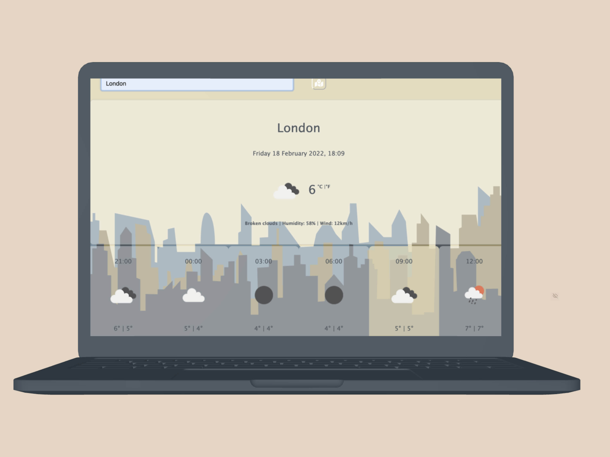

DURATION
4 months of weekly classes
ROLE
Coding student at SheCodes.io
TOOLKIT
HTML, CSS, Javascript, Illustrator
Between October 2020 and January 2021, I decided to learn a bit about front-end development. On the one hand, I wanted to understand how design ideas are translated into code and on the other hand, I wanted to understand how I can work better with developers.
I came across SheCodes, an online workshop that aims to introduce women to the world of coding. I first completed the SheCodes Plus and SheCodes React modules.
